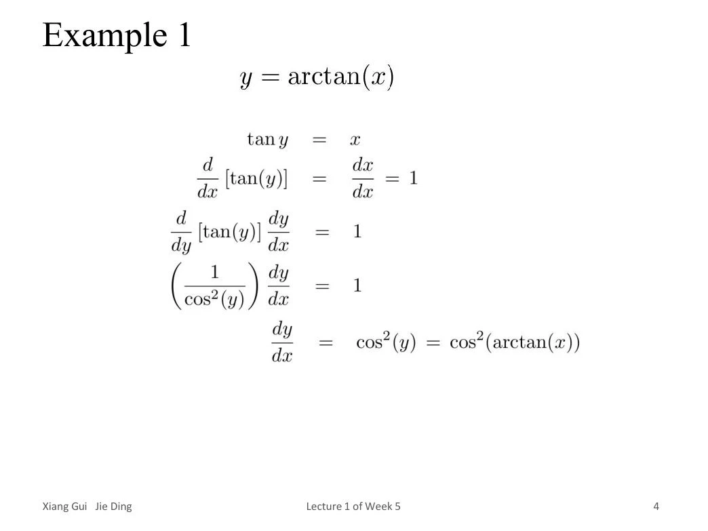
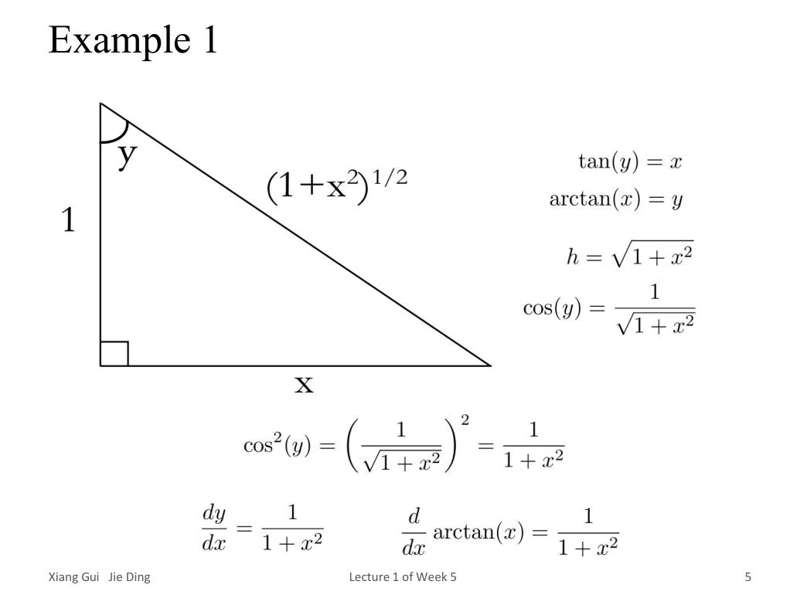

HDD4010 工程数学 I · 第 06 / 08 讲
第 3 章 · 反三角、双曲函数、洛必达与定积分
Inverse Trigonometric and Hyperbolic Functions, L’Hôpital’s Rule, Riemann Sums
所属章节：第 3 章 超越函数与极限技巧
资料来源 · 2 项 / 已附 0 项
Topic 6/EMI_Week6_Lecture1.pdf未附原文件Topic 6/EMI_Week6_Lecture2.pdf未附原文件
未附文件仅列原始名称；版本与核对日期由维护者登记。
本节定位
本讲把「函数库」补齐最后一块（反三角函数与双曲函数），把「极限工具」升级（洛必达法则），并开启本课程的第二大主题：积分。三件事看似无关，实际共用一条逻辑：反三角函数的导数给出两个新的积分公式；洛必达法则处理所有未定式；而黎曼和把「面积」定义为和式的极限——这正是第 7 讲定积分的起点。
本节还包含考试事务：第一次考试在 10 月 21 日，需在 10 月 14 日前报名；考试不允许使用计算器，但会提供公式表。
学完本节你应当能够：
- 写出 arcsin、arccos、arctan 的定义域、值域与导数，并会用它们求积分
- 处理三角函数的反函数复合（如
sin⁻¹(sin 4π/5)、cos(sin⁻¹ x)） - 写出双曲函数的定义、基本恒等式与导数
- 识别七种未定式，针对每种选择正确的变形路径，并正确使用洛必达法则（含判断何时不能用）
- 把面积写成黎曼和的极限，并用求和公式求出具体值
- 用定积分的性质（线性、可加、奇偶）简化计算
6.1 考试事务与反三角函数的必要性
第一次考试 10 月 21 日，报名截止 10 月 14 日。考试不允许使用计算器，但会发公式表（formula sheet，之后放在 Moodle 上）。这意味着 sin⁻¹(1/2)、tan⁻¹(1) 这类特殊值必须条件反射式地写出。
三角函数是周期的，因此在 ℝ 上不是一一对应，没有反函数。解决办法是限制定义域，在使函数一一对应的那段区间上定义反函数。每段区间的选择都不是随意的：要覆盖整个值域，且在该段上严格单调。
6.2 反正弦 arcsin
把 y = sin x 限制在 [−π/2, π/2]（在此区间严格递增，值域 [−1, 1]），其反函数记作 sin⁻¹ 或 arcsin：
y = sin⁻¹ x ⟺ x = sin y，其中 y ∈ [−π/2, π/2]。
定义域 [−1, 1]，值域 [−π/2, π/2]。示例：sin⁻¹(1/2) = π/6、sin⁻¹(√2/2) = π/4、sin⁻¹(−1) = −π/2、sin⁻¹ 2 无定义（2 超出 [−1, 1]）。
图像是 y = sin x 在 [−π/2, π/2] 这一段关于 y = x 的反射：过原点，两端点 (±1, ±π/2)，斜率为正。
源文件例（复合）：求 sin⁻¹(sin 4π/5)。因为 4π/5 ∉ [−π/2, π/2]，不能直接写 = 4π/5。用补角公式：sin(4π/5) = sin(π − 4π/5) = sin(π/5)，而 π/5 ∈ [−π/2, π/2]，故 sin⁻¹(sin 4π/5) = π/5。
源文件例：化简 cos(sin⁻¹ x)。令 θ = sin⁻¹ x，则 sin θ = x 且 θ ∈ [−π/2, π/2]；在该区间 cos θ ≥ 0，故 cos θ = √(1 − sin²θ) = √(1 − x²)。
sin⁻¹(sin θ) = θ 只在 θ ∈ [−π/2, π/2] 时成立；超出该区间必须先用诱导公式把角折回主值区间。同理 cos⁻¹(cos θ) = θ 只在 θ ∈ [0, π] 成立。6.3 arcsin 的导数
d/dx sin⁻¹ x = 1/√(1 − x²)（−1 < x < 1）。
证明：设 y = sin⁻¹ x，则 x = sin y。两边对 x 求导（链式法则）：1 = cos y·y′，故 y′ = 1/cos y。因为 y ∈ (−π/2, π/2)，cos y > 0，所以 cos y = √(1 − sin²y) = √(1 − x²)，于是 y′ = 1/√(1 − x²)。
源文件例：求 d/dx sin⁻¹(x/a)（a > 0），并由此得积分公式。由链式法则
d/dx sin⁻¹(x/a) = 1/√(1 − (x/a)²) · (1/a) = 1/√(a² − x²)（a > 0 时 √(a²) = a）。
故 ∫ dx/√(a² − x²) = sin⁻¹(x/a) + C（a > 0）。这是第 7 讲「三角代换」的标准出口。
6.4 反余弦 arccos
把 y = cos x 限制在 [0, π]（严格递减），反函数 cos⁻¹ 或 arccos：
y = cos⁻¹ x ⟺ x = cos y，y ∈ [0, π]；定义域 [−1, 1]，值域 [0, π]。
两个反三角函数的互补关系：由 cos y = sin(π/2 − y) 可得
cos⁻¹ x + sin⁻¹ x = π/2，
因此 cos⁻¹ x = π/2 − sin⁻¹ x，其导数为 −1/√(1 − x²)——比 arcsin 多一个负号，来源就是这个 π/2 的常数差（常数的导数为 0，负号来自对 sin⁻¹ x 取负）。
6.5 反正切 arctan
把 y = tan x 限制在 (−π/2, π/2)（严格递增），反函数 tan⁻¹ 或 arctan：
y = tan⁻¹ x ⟺ x = tan y，y ∈ (−π/2, π/2)；定义域 ℝ，值域 (−π/2, π/2)。
因为有两条水平渐近线 y = ±π/2：x → ±∞ 时 tan⁻¹ x → ±π/2。示例：tan⁻¹ 1 = π/4、tan⁻¹ 0 = 0、tan⁻¹(−√3) = −π/3。
导数：设 y = tan⁻¹ x，则 x = tan y，1 = sec²y·y′ = (1 + tan²y)y′ = (1 + x²)y′，故
d/dx tan⁻¹ x = 1/(1 + x²)，∫ dx/(a² + x²) = (1/a)tan⁻¹(x/a) + C（a ≠ 0）。
6.6 双曲函数
对任意实数 x，定义双曲余弦与双曲正弦：
cosh x = (eˣ + e^{−x})/2，sinh x = (eˣ − e^{−x})/2。
四个基本事实：cosh 是偶函数（cosh(−x) = cosh x）；sinh 是奇函数（sinh(−x) = −sinh x）；cosh 0 = 1、sinh 0 = 0；基本恒等式
cosh²x − sinh²x = 1。
恒等式的验证（源文件写法）：cosh²x − sinh²x = [(eˣ+e^{−x})/2]² − [(eˣ−e^{−x})/2]² = [(e^{2x} + 2 + e^{−2x}) − (e^{2x} − 2 + e^{−2x})]/4 = 4/4 = 1。这个式子与双曲线 x² − y² = 1 同形，正是「双曲」这个名字的来源（对应 cos² + sin² = 1 对应圆）。
6.7 双曲函数的图像与渐近行为
cosh x：定义域 ℝ，值域[1, ∞)，在x = 0取最小值 1（cosh x ≥ 1）；x → ∞时渐近于eˣ/2，x → −∞时渐近于e^{−x}/2sinh x：定义域 ℝ，值域 ℝ，过原点且处处递增；x → ∞时渐近于eˣ/2，x → −∞时渐近于−e^{−x}/2
6.8 双曲函数的导数
d/dx cosh x = sinh x，d/dx sinh x = cosh x——互相求导，没有负号，这是它们比 sin/cos 更好用的地方。
证明：d/dx[(eˣ + e^{−x})/2] = (eˣ − e^{−x})/2 = sinh x；d/dx[(eˣ − e^{−x})/2] = (eˣ + e^{−x})/2 = cosh x。
由此还可得 ∫cosh x dx = sinh x + C、∫sinh x dx = cosh x + C。
6.9 双曲恒等式的用法
源文件例 (a)：证明 cosh 2x = 2cosh²x − 1。由定义
cosh 2x = (e^{2x} + e^{−2x})/2 = [(eˣ + e^{−x})² − 2]/2 = [(2cosh x)² − 2]/2 = 2cosh²x − 1。
源文件例 (b)：已知 cosh x = 5/4，求 sinh 2x。先用上面的恒等式：cosh 2x = 2(25/16) − 1 = 50/16 − 1 = 34/16 = 17/8。再用 cosh²2x − sinh²2x = 1：
sinh²2x = 289/64 − 1 = 225/64，故 sinh 2x = ±15/8。
符号无法由 cosh x 唯一确定（因为 cosh 是偶函数，x 与 −x 给出同一个 cosh x 而 sinh 2x 变号），所以答案必须保留 ±；若题目另给 x > 0 则取正。
6.10 未定式与七种类型
若 f 与 g 在 x = c 处同时为 0，则 lim f(x)/g(x) 不能靠代入确定，代入会得到 0/0，称为未定式（indeterminate form）；需要进一步分析极限是否存在、等于多少。若两者在 c 附近都趋于 ±∞，则得到 ∞/∞ 型。
| 类型 | 典型例子 | 结果 | 处理方向 |
|---|---|---|---|
0/0 | lim_{x→0} sin x/x | 1 | 洛必达或等价化简 |
∞/∞ | lim_{x→∞}(x²+3x+1)/x | ∞ | 洛必达或比较次数 |
0 · ∞ | lim_{x→0⁺} x ln x | 0 | 改写成 0/(1/∞) 或 ∞/(1/0) |
∞ − ∞ | lim_{x→0}(1/x − 1/sin x) | 0 | 通分或乘共轭 |
0⁰ | lim_{x→0⁺} xˣ | 1 | 取对数化为 0·∞ |
∞⁰ | lim_{x→∞} x^{1/x} | 1 | 取对数化为 0·∞ |
1^∞ | lim_{x→0}(1+x)^{1/x} | e | 取对数化为 ∞·0 |
6.11 柯西中值定理
若 f、g 在 [a, b] 上连续、在 (a, b) 内可导，且 g′(x) ≠ 0 对一切 x ∈ (a, b) 成立，则存在 c ∈ (a, b) 使
[f(b) − f(a)]/[g(b) − g(a)] = f′(c)/g′(c)。
证明要用一个辅助函数：h(x) = [f(b) − f(a)]g(x) − [g(b) − g(a)]f(x)。它在两端点取值相等（h(a) = h(b)），且连续可导，由罗尔定理存在 c 使 h′(c) = 0，即 [f(b)−f(a)]g′(c) = [g(b)−g(a)]f′(c)，整理即得结论。
（源文件先说明 g(b) ≠ g(a)：否则由罗尔定理存在 g′ = 0 的点，与假设矛盾。）当 g(x) = x 时，柯西公式退化为拉格朗日中值定理——这是源文件特别指出的一点。
6.12 洛必达法则
若 f、g 在含 c 的开区间内可导（c 本身可以例外），g′(x) ≠ 0（x ≠ c），且 f(x)/g(x) 在 x → c 时呈 0/0 或 ∞/∞ 型，则
lim_{x→c} f(x)/g(x) = lim_{x→c} f′(x)/g′(x)，
只要右端的极限存在（或为 ±∞）。法则对 x → ±∞、单侧极限、以及 c = ±∞ 同样成立。
证明思路（0/0 型）：把 f、g 在 c 处补充定义为 0，使它们在 c 连续；再对区间 [c, x] 用柯西中值定理，得 f(x)/g(x) = f′(ξ)/g′(ξ)，其中 ξ 在 c 与 x 之间；令 x → c 则 ξ → c，结论成立。∞/∞ 型的证明更繁，源文件说明「可参考高等微积分教材」。
lim (x+1)/x 在 x→1，直接代入得 2，用洛必达会算出 1）；② 分子分母并非同时趋于 0 或同时趋于 ∞；③ 用了之后右端极限不存在且不是 ∞，此时法则失效，需回到代数变形。源文件在页末专门写了 Caution：不要对非未定式使用洛必达法则。6.13 0/0 型的三个例子
(a) lim_{x→1} ln x/(x² − 1)。代入得 0/0。用洛必达：(1/x)/(2x) = 1/(2x²) → 1/2。
(b) lim_{x→0} (eˣ + e^{−x} − 2)/(1 − cos 2x)。代入得 0/0。一次洛必达：(eˣ − e^{−x})/(2 sin 2x)，仍是 0/0；再次：(eˣ + e^{−x})/(4 cos 2x) → 2/4 = 1/2。
（也可以先用等价无穷小判断量级：分子 ≈ x²、分母 ≈ 2x²，直接看出答案 1/2。）
(c) lim_{x→π/2⁻} (2x − π)/cos x。代入得 0/0（分母从正侧趋于 0）。洛必达：2/(−sin x) → −2。
源文件强调：若一次洛必达后仍是未定式，可以重复使用，直到能定出极限；而最终极限的存在性反过来保证前面每一步的合法性。
6.14 ∞/∞ 型：先变形再洛必达
(a) lim_{x→∞} x e^{−x/2}。这是 0 · ∞ 型，改写成 ∞/∞：x/e^{x/2}。洛必达一次：1/((1/2)e^{x/2}) = 2/e^{x/2} → 0。
(b) lim_{x→π/2⁻} 4 tan x/(1 + sec x)。代入得 ∞/∞。洛必达：4sec²x/(sec x tan x) = 4sec x/tan x = 4/sin x → 4。
源文件还演示了一条「洛必达越用越乱」的情形：若对 4tan x/(1+sec x) 反复求导，会一直停在 ∞/∞。此时应改用三角恒等式把商化简：4sec x/tan x = (4/cos x)/(sin x/cos x) = 4/sin x，直接看出极限为 4。这说明洛必达不是万能钥匙，先化简往往更快。
6.15 0 · ∞ 型
标准做法：把 f·g 写成 f/(1/g) 或 g/(1/f)，选那个「变形后更好求导」的方向。
lim_{x→0⁺} xᵃ ln x = 0（a > 0）：改写为ln x/x^{−a}，洛必达得(1/x)/(−a x^{−a−1}) = −xᵃ/a → 0，再由夹逼取绝对值lim_{x→∞} ln x/xᵃ = 0（a > 0）：直接用洛必达得(1/x)/(a x^{a−1}) = 1/(a xᵃ) → 0lim_{x→0⁺} x ln(1/x) = 0：注意ln(1/x) = −ln x，化为上一条lim_{x→0} x cot x = 1：改写为x cos x/sin x，cos x → 1且x/sin x → 1，故为 1
6.16 ∞ − ∞ 型：通分或乘共轭
lim_{x→0}(1/x − 1/sin x) = 0：通分得(sin x − x)/(x sin x)，两次洛必达得0/2 = 0（也可用sin x − x ≈ −x³/6快速判断）lim_{x→∞}(x − x²/(x + ln x)) = ∞：通分得(x² + x ln x − x²)/(x + ln x) = x ln x/(x + ln x)，分子增长更快，故为 ∞lim_{x→1⁺}(1/ln x − 1/(x−1)) = 1/2：通分得(x − 1 − ln x)/((x−1)ln x)，两次洛必达（或展开）得 1/2lim_{x→0}(1/(eˣ − 1) − 1/x) = −1/2：通分得(x − eˣ + 1)/(x(eˣ−1))，两次洛必达得 −1/2
6.17 幂型：0⁰、∞⁰、1^∞ 的四步法
对 lim f(x)^{g(x)} 呈 0⁰、∞⁰ 或 1^∞ 型：
- 令
y = f(x)^{g(x)}，先求ln y = g(x) ln f(x) - 求
lim ln y（此时已化为0·∞型，按上节处理） - 设
lim ln y = L，则lim y = e^L
源文件三个例子：
lim_{x→0⁺} xˣ = 1：ln y = x ln x → 0，故y → e⁰ = 1lim_{x→∞} x^{1/x} = 1：ln y = (ln x)/x → 0，故y → 1lim_{x→∞}(1 + sin(3/x))ˣ = e³：ln y = x ln(1 + sin(3/x))，用ln(1+u) ≈ u得≈ x·sin(3/x) ≈ x·(3/x) = 3，故y → e³
其他常见结果：lim_{x→0}(1 + 3x)^{1/(2x)} = e^{3/2}、lim_{x→0}(1+x)^{1/x} = e、lim_{x→0}(1−x)^{1/x} = e^{−1}。这三个都由标准极限 lim_{u→0}(1+u)^{1/u} = e 变形而来：把指数改写成 (1/3x)·(3/2) 之类的形式即可。
6.18 面积问题与黎曼和
考虑区域 R：在 y = f(x) 之下（f 在 [a, b] 连续且 f ≥ 0）、x 轴之上、竖直线 x = a 与 x = b 之间。
用分割点 x₀ = a < x₁ < ⋯ < xₙ = b 把区间分成 n 段，第 i 段长 Δxᵢ = xᵢ − xᵢ₋₁。在第 i 段上任取样本点 xᵢ*∈ [xᵢ₋₁, xᵢ]，以 f(xᵢ*) 为高作矩形，面积为 f(xᵢ*)Δxᵢ。把这些面积相加得黎曼和（Riemann sum）：
Sₙ = Σ_{i=1}^{n} f(xᵢ*)Δxᵢ。
当 n → ∞ 且 max Δxᵢ → 0 时，Sₙ 趋于区域面积。这个「和式的极限」就是定积分。
6.19 一个完整计算：y = x² 在 [0, b] 上的面积
把 [0, b] 等分成 n 段，Δx = b/n，xᵢ = ib/n。取右端点作样本点，矩形高 (ib/n)²，于是
Sₙ = Σ_{i=1}^{n} (ib/n)²(b/n) = (b³/n³) Σ_{i=1}^{n} i² = (b³/n³)·n(n+1)(2n+1)/6。
化简：Sₙ = b³(n+1)(2n+1)/(6n²)。令 n → ∞：
lim Sₙ = b³·(2/6) = b³/3。
这条推导依赖求和公式 Σ_{i=1}^{n} i² = n(n+1)(2n+1)/6（源文件把它列入公式表，考试可直接引用）。代入 b = 1 得经典结果 ∫₀¹x²dx = 1/3。
6.20 下和、上和与可积性
分割 P = {x₀, x₁, …, xₙ}（a = x₀ < ⋯ < xₙ = b）把 [a, b] 分成 n 个子区间，称 P 为一个分割；其范数（norm）为 ||P|| = max Δxᵢ。
在每个子区间上，连续函数取到最小值 mᵢ 与最大值 Mᵢ（最值定理保证）。下和与上和定义为
L(f, P) = Σ mᵢΔxᵢ，U(f, P) = Σ MᵢΔxᵢ。
显然 L(f, P) ≤ 真实面积 ≤ U(f, P)，且任何黎曼和都夹在两者之间。对 x² 在 [0, b] 上等分，用左端点得下和
L = (b³/n³)Σ_{i=1}^{n}(i−1)² = b³(n−1)(2n−1)/(6n²)，
用右端点得上和 U = b³(n+1)(2n+1)/(6n²)。当 n → ∞ 时两者都趋于 b³/3——这就是「可积」的含义。
可积的定义：若存在唯一的数 I，使对 [a, b] 的每个分割 P 都有 L(f, P) ≤ I ≤ U(f, P)，则称 f 在 [a, b] 上可积（integrable），并定义
I = ∫ₐᵇ f(x) dx，即 lim_{||P||→0} L(f, P) = I = lim_{||P||→0} U(f, P)。
记号各部分：∫ 是积分号（integral sign）；a、b 是积分下限与上限；f(x) 是被积函数（integrand）；x 是积分变量；dx 是 x 的微分。积分变量用什么字母都不影响结果（哑变量）。
6.21 定积分的几何意义与性质
几何上，定积分是有向面积：x 轴上方部分计正、下方部分计负。若 f ≥ 0，∫ₐᵇ f 就是面积；若 f ≤ 0，积分为负的面积；若 f 变号，则正负相消，得到「上方面积减下方面积」。
性质（设 f、g 在含 a、b、c 的区间上可积）：
∫ₐᵃ f = 0（零宽度，面积为 0）∫ₐᵇ f = −∫ᵦᵃ f（交换上下限变号）- 线性：
∫ₐᵇ(αf + βg) = α∫ₐᵇf + β∫ₐᵇg - 可加：
∫ₐᶜ f + ∫꜀ᵇ f = ∫ₐᵇ f（c 可以在区间内、外都成立） - 比较：若
a ≤ b且f ≤ g，则∫ₐᵇ f ≤ ∫ₐᵇ g - 绝对值不等式：
|∫ₐᵇ f| ≤ ∫ₐᵇ |f| - 奇偶性：f 奇则
∫_{−a}^{a} f = 0；f 偶则∫_{−a}^{a} f = 2∫₀^{a} f
最后一条来自「有向面积的正负相消」：奇函数在对称区间的左右两块面积大小相等、符号相反，故总和为 0。这条性质在考试里能省下大量计算。
连续与可积：若 f 在 [a, b] 上连续，则 f 在 [a, b] 上可积。逆命题不成立——可积函数可以是不连续的（例如分段连续、只有有限个跳跃点的函数）。
积分中值定理：若 f 在 [a, b] 上连续，则存在 c ∈ [a, b] 使 f(c) = (1/(b−a))∫ₐᵇ f(x)dx。也就是说，连续函数在区间上的平均值一定能被某点的函数值取到。
原版图页（源 PDF 插图页）






| English | 中文 | 说明 / 例句 |
|---|---|---|
| inverse sine | 反正弦 | y = sin⁻¹x on [−1,1], range [−π/2, π/2]. |
| inverse cosine | 反余弦 | cos⁻¹x = π/2 − sin⁻¹x, range [0, π]. |
| inverse tangent | 反正切 | tan⁻¹x on ℝ, range (−π/2, π/2), horizontal asymptotes ±π/2. |
| hyperbolic cosine | 双曲余弦 | cosh x = (eˣ + e^{−x})/2, even, range [1, ∞). |
| hyperbolic sine | 双曲正弦 | sinh x = (eˣ − e^{−x})/2, odd, range ℝ. |
| fundamental identity | 双曲基本恒等式 | cosh²x − sinh²x = 1. |
| indeterminate form | 未定式 | Limits of type 0/0, ∞/∞, 0·∞, ∞−∞, 0⁰, ∞⁰, 1^∞. |
| Cauchy mean-value theorem | 柯西中值定理 | [f(b)−f(a)]/[g(b)−g(a)] = f′(c)/g′(c). |
| L’Hôpital’s rule | 洛必达法则 | For 0/0 or ∞/∞, lim f/g = lim f′/g′. |
| logarithmic limit | 对数化处理 | For powers, take ln y, find the limit, then exponentiate. |
| Riemann sum | 黎曼和 | Σ f(xᵢ*)Δxᵢ approximating the area under the graph. |
| partition | 分割 | A finite set a = x₀ < x₁ < ⋯ < xₙ = b; its norm is max Δxᵢ. |
| lower and upper sums | 下和与上和 | Σ mᵢΔxᵢ and Σ MᵢΔxᵢ bracketing the true area. |
| definite integral | 定积分 | The unique number I with L(f,P) ≤ I ≤ U(f,P) for every partition. |
| integrable | 可积 | A definite integral exists; every continuous function on [a,b] is integrable. |
(a) 4π/5 不在主值区间 [−π/2, π/2]，不能直接抵消。用补角公式：sin(4π/5) = sin(π − 4π/5) = sin(π/5)。
而 π/5 ∈ [−π/2, π/2]，故 sin⁻¹(sin 4π/5) = sin⁻¹(sin π/5) = π/5。
(b) 令 θ = sin⁻¹ x，则 sin θ = x、θ ∈ [−π/2, π/2]。在该区间 cos θ ≥ 0，故 cos θ = √(1 − sin²θ) = √(1 − x²)，取正号。
要点：反三角复合题一律「先判断角是否在主值区间 → 用诱导公式折回 → 再抵消」；开方时用主值区间的符号确定正负。
(a) 代入得 0/0。一次洛必达：(1/x)/(2x) = 1/(2x²)，令 x → 1 得 1/2。
(b) 代入得 0/0。一次：(eˣ − e^{−x})/(2 sin 2x)（仍是 0/0）；二次：(eˣ + e^{−x})/(4 cos 2x)。令 x → 0：(1+1)/(4·1) = 1/2。
(c) 代入得 0/0（cos x → 0⁺）。一次：2/(−sin x)，令 x → π/2⁻ 得 2/(−1) = −2。
要点：每用一次都要重新检查是否仍是未定式；一旦不再是（如 (c) 第二次已是有限值），立刻停止并代值。
(a) 这是 1^∞ 型。设 y = (1+3x)^{1/(2x)}，则 ln y = ln(1+3x)/(2x)。
洛必达：(3/(1+3x))/2 → 3/2（令 x → 0）。故 y → e^{3/2}。
(b) 这是 0⁰ 型。ln y = x ln x，由上节结果 x ln x → 0，故 y → e⁰ = 1。
(c) 这是 1^∞ 型（sin(3/x) → 0）。ln y = x ln(1 + sin(3/x))。用 ln(1+u) ≈ u（u → 0）：ln y ≈ x sin(3/x) ≈ x·(3/x) = 3，故 y → e³。
统一模板：取对数 → 变成 0·∞ → 改写成商 → 洛必达或等价化简 → 取指数。三步走，所有幂型未定式都适用。
把 [0, b] 等分，Δx = b/n，分割点 xᵢ = ib/n（i = 0, …, n）。
取右端点作样本点 xᵢ* = ib/n，矩形高 (ib/n)²，黎曼和
Sₙ = Σ_{i=1}^{n}(ib/n)²(b/n) = (b³/n³)Σ_{i=1}^{n}i²。
代入 Σi² = n(n+1)(2n+1)/6：Sₙ = b³(n+1)(2n+1)/(6n²)。
令 n → ∞：(n+1)(2n+1)/(6n²) → 2/6 = 1/3，故面积 = b³/3。
检验：b = 1 时 1/3；b = 3 时 9。量纲检查：面积应与 b³ 同量纲，因为曲线是 y = x²（长度²），再乘长度得长度³——结果形式合理。
- 求
d/dx tan⁻¹(3x)；并写出∫dx/(x² + 9)。 - 已知
cosh x = 5/4，求cosh 2x与sinh 2x。 - 用洛必达法则求
lim_{x→0}(sin x − x)/x³。 - 用洛必达法则求
lim_{x→0}(tan x − x)/x³。 - 求
lim_{x→1⁺}(1/ln x − 1/(x−1))。 - 用黎曼和求
∫₀¹ x² dx，并用定积分性质计算∫_{−2}^{2}(x³ + x) dx。
答案与思路
1. d/dx tan⁻¹(3x) = 3/(1 + 9x²)；∫dx/(x²+9) = (1/3)tan⁻¹(x/3) + C（公式 ∫dx/(a²+x²) = (1/a)tan⁻¹(x/a)，此处 a = 3）。
2. cosh2x = 2(5/4)² − 1 = 50/16 − 1 = 17/8；sinh²2x = (17/8)² − 1 = 225/64，故 sinh2x = ±15/8（符号取决于 x 的正负，题目未给则写 ±）。
3. 三次洛必达：(sin x − x)/x³ → (cos x − 1)/(3x²) → (−sin x)/(6x) → (−cos x)/6 → −1/6。
4. (tan x − x)/x³ → (sec²x − 1)/(3x²) = tan²x/(3x²) → (1/3)(tan x/x)² → 1/3。注意第二步用了 sec²x − 1 = tan²x，这比继续求导更快。
5. 通分：(x − 1 − ln x)/((x−1)ln x)。第一次洛必达得 (1 − 1/x)/(ln x + 1 − 1/x)（仍是 0/0），第二次得 (1/x²)/(1/x + 1/x²) = 1/(x+1)，令 x → 1⁺ 得 1/2。也可用展开 ln x ≈ (x−1) − (x−1)²/2 直接看出结果，两种做法互相印证。
6. 黎曼和：Sₙ = (1/n³)Σi² = (n+1)(2n+1)/(6n²) → 1/3。∫_{−2}^{2}(x³+x)dx = 0：被积函数是奇函数（(−x)³ + (−x) = −(x³+x)），在对称区间上积分为 0。
sin⁻¹、cos⁻¹、tan⁻¹ 的导数与三个配套积分公式；②反三角复合（主值区间问题）；③双曲函数恒等式与导数；④洛必达处理 0/0、∞/∞、0·∞、∞−∞、幂型；⑤黎曼和求面积；⑥定积分性质（尤其奇偶性）。sin⁻¹(sin 4π/5) ≠ 4π/5，必须先用诱导公式折算回主值区间。lim ln y = L 后必须写 lim y = e^L，很多人停在 L 上。b/n 而不是 1；Σi² 的上限是 n（右端点）或 n−1（左端点），两者极限相同但中间式子不同。sin x ≈ x、tan x ≈ x、1 − cos x ≈ x²/2、ln(1+u) ≈ u、e^u − 1 ≈ u。先用等价量判断阶数，再用洛必达收尾，通常能少求一两次导。方法与清单
处理未定式（先分类，再选工具）
- 代入判断类型：
0/0、∞/∞、0·∞、∞−∞、0⁰、∞⁰、1^∞ 0·∞改写成商；∞−∞通分或乘共轭；幂型取对数化成0·∞- 变成
0/0或∞/∞后才用洛必达，每用一次重新检查类型 - 若洛必达越用越乱，改回代数变形或三角恒等式化简
反三角复合（三步）
- 看内层角是否落在主值区间（arcsin 为
[−π/2, π/2]，arccos 为[0, π]） - 不在则用周期性或诱导公式把角折回主值区间
- 抵消后若需开方（如
cos(sin⁻¹x)），符号由主值区间决定
黎曼和求面积（四步）
- 等分区间，写出
Δx与分割点xᵢ - 选样本点（左端、右端或中点），写出矩形高
f(xᵢ*) - 写出和式并代入
Σ1 = n、Σi、Σi²等公式化简 - 令
n → ∞取极限，并用特殊值或量纲检查结果
| 源文件 | 页码 | 覆盖知识点 |
|---|---|---|
| Topic 6/EMI_Week6_Lecture1.pdf | p1–p2 | 第一次考试时间与报名截止、不允许计算器、公式表 |
| Topic 6/EMI_Week6_Lecture1.pdf | p4–p8 | 反三角函数的必要性、arcsin 的定义域值域与图像、反三角复合两例 |
| Topic 6/EMI_Week6_Lecture1.pdf | p9–p10 | arcsin 导数证明、sin⁻¹(x/a) 的导数与 ∫dx/√(a²−x²) |
| Topic 6/EMI_Week6_Lecture1.pdf | p11–p15 | arccos 的定义与互补关系、其导数；arctan 的定义、渐近线、导数与积分公式 |
| Topic 6/EMI_Week6_Lecture1.pdf | p16–p17 | 双曲函数的定义、奇偶性、基本恒等式、图像与渐近行为 |
| Topic 6/EMI_Week6_Lecture1.pdf | p18–p19 | cosh 与 sinh 的导数推导、cosh2x 恒等式、由 cosh x 求 sinh 2x |
| Topic 6/EMI_Week6_Lecture1.pdf | p20–p21 | 未定式概念、七种类型及其代表例 |
| Topic 6/EMI_Week6_Lecture1.pdf | p22–p25 | 柯西中值定理、辅助函数与罗尔定理证明、MVT 作为特例 |
| Topic 6/EMI_Week6_Lecture1.pdf | p26–p29 | 洛必达法则的陈述、0/0 型的证明、∞/∞ 与 x→∞ 的说明 |
| Topic 6/EMI_Week6_Lecture1.pdf | p30–p32 | 三个 0/0 型例子、重复使用法则、四道任务与「不要滥用」的警告 |
| Topic 6/EMI_Week6_Lecture2.pdf | p2–p4 | ∞/∞ 型与 0·∞ 改写、4tan x/(1+sec x) 的恒等式化简、四道 0·∞ 任务 |
| Topic 6/EMI_Week6_Lecture2.pdf | p5–p7 | ∞−∞ 型的通分处理、两个例子与四道任务 |
| Topic 6/EMI_Week6_Lecture2.pdf | p8–p13 | 幂型 0⁰、∞⁰、1^∞ 的四步法、三个例子与四道任务 |
| Topic 6/EMI_Week6_Lecture2.pdf | p14–p20 | 面积问题、分割与样本点、黎曼和、y = x² 的完整计算 |
| Topic 6/EMI_Week6_Lecture2.pdf | p21–p23 | 分割的范数、下和与上和、x² 的上下和、夹逼到 b³/3 |
| Topic 6/EMI_Week6_Lecture2.pdf | p24–p28 | 定积分定义与记号、几何意义（有向面积）、六条性质、连续 ⇒ 可积、积分中值定理 |
| （跳过）Topic 6 中纯图片页与 _info 页面 | — | p4–p5 等图形页按相邻文字复原；Lecture One/Two.html 为登录页快照 |
| （拓展） | — | 七种未定式的处理流程图、双曲函数的积分公式与黎曼和的分割范数讨论为衔接性补充 |